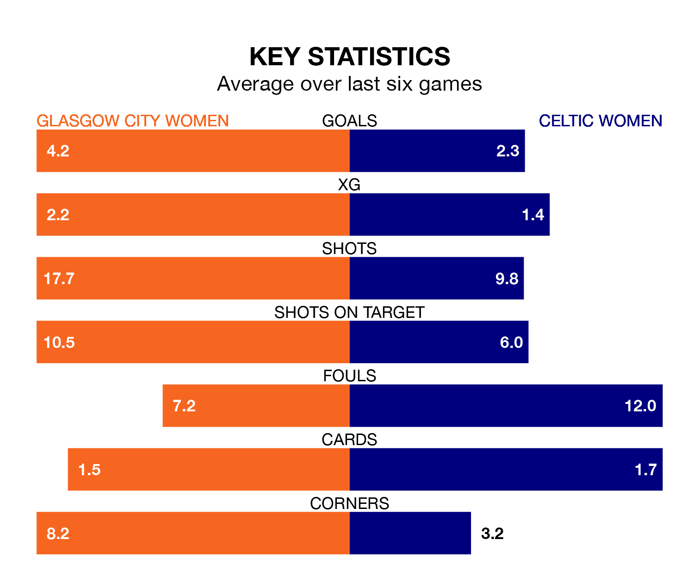

Two of SWPL 1's top sides face each other at Petershill Park in Sunday's kick-off, when third-placed Glasgow City Women host second-placed Celtic Women.
Glasgow City have picked up 19 wins and two draws from 23 games so far this season, and sit on the same number of points as the visitors going into the 4.010pm match.
Celtic, meanwhile, have won 19 and drawn two, picking up 59 points.
With 104 goals in 23 games so far this season, Celtic are the league's highest scorers with 4.5 goals per game. And they are conceding fewer than average, letting in 14 goals at a rate of 0.6 per game.
Glasgow City are also above average scorers, with 3.2 goals per game, compared to a league average of 2.1. They have conceded 0.6 goals per game.
The home team are in exceptional form in SWPL 1, with six wins and no losses from their last six games.
With four wins and a draw over that period, the visitors' form is worse – they have taken 13 points from 18, compared to Glasgow City's 18.
In Amy Gallagher, Celtic have the league's most on-form striker so far this season. She has notched 22 goals in 22 appearances.
Her goal rate of one every 82 minutes is quicker than that of Lauren Davidson, Glasgow City's top scorer with a goal every 131 minutes, and a total of 13 goals in 23 games.
In the last 10 years, Glasgow City and Celtic have played each other on 14 occasions. Glasgow City won seven of them, Celtic five, and they drew twice.
On average, Glasgow City scored 1.4 goals and Celtic 1.2 in those matches.
Their last meeting was on January 28, when Glasgow City won 1-0 at home.
Glasgow City's last match was on March 17, a 2-0 win against Hearts Women, with Emily Whelan and Fiona Brown getting the goals for Glasgow City.
Celtic beat Rangers Women 2-1 last time out, also on March 17, with Natasha Jane Flint on the scoresheet.
Updated: 10:19 (UTC), 22/03/24